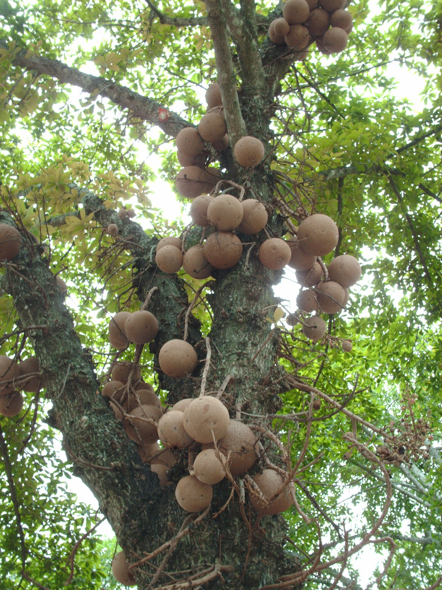
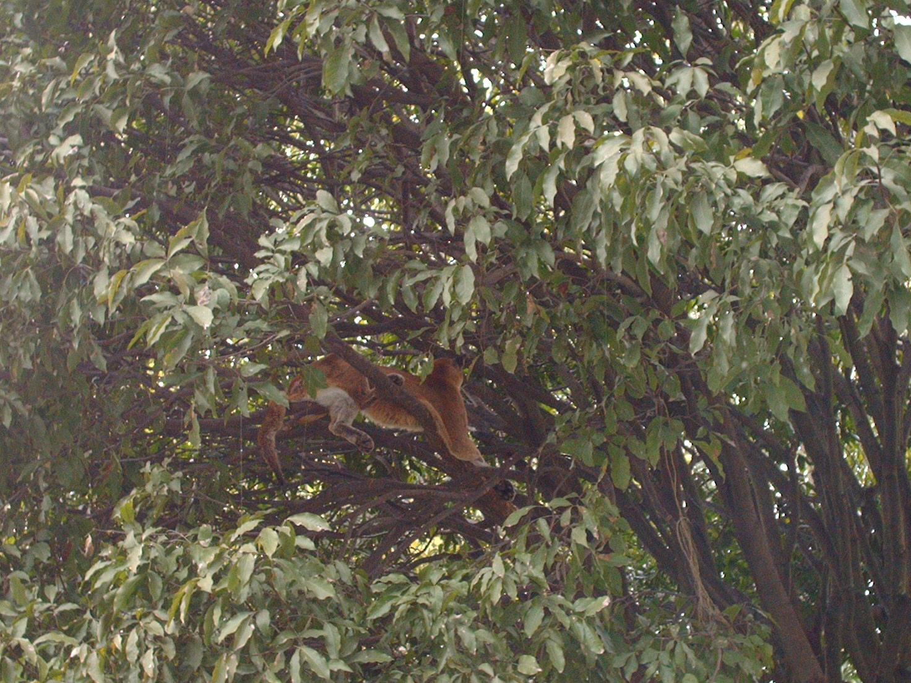
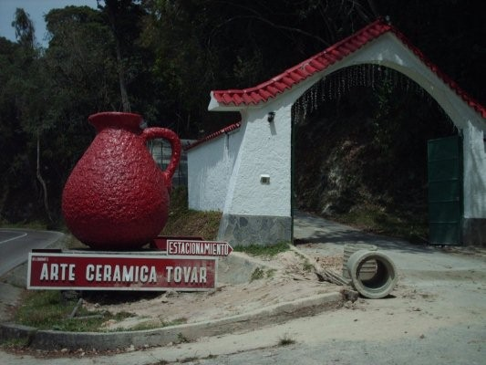
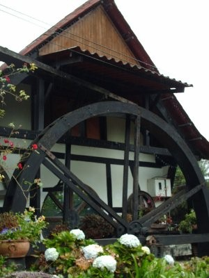
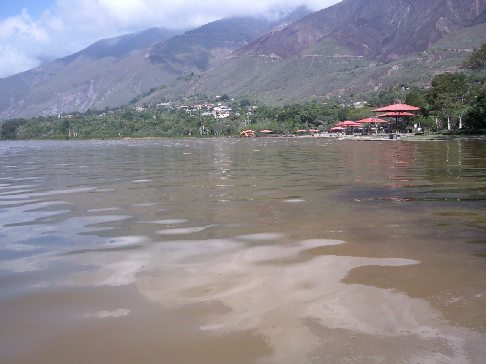
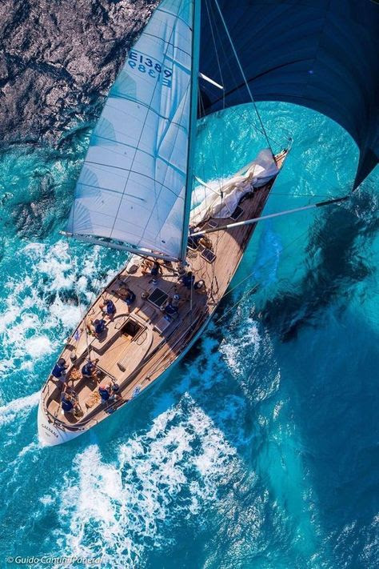

Galería de fotos
Una selección de fotos
A continuación encontraremos algunas fotografías realizadas en: parques, rios, montañas y costas de Venezuela
Descripción de las fotografías:
La Neblina, parque Macarao El Junquito Caracas,
Frutos y el Puma, parque Miranda Caracas, Rio Caroní y La Piedra, parque Cachamai, Edo. Bolívar
La Colonia Tovar, es un pueblo situado en el Estado Aragua a pocos kilómetros de la ciudad de La Victoria y, tiene como zonas limítrofes: por el Estado Vargas los pueblos del Junquito, Carayaca, Puerto Cruz, Puerto Maya, y por el Estado Miranda los pueblos del Jarillo, San Pedro y la ciudad de Los Teques. Fundada en 1843 originalmente por colonos alemanes, estos terrenos de unos 225Km2 pertenecían a la familia de Manuel Felipe Tovar y fue Martín Tovar quien se los ofreció al General Agustin Codazzi para que los cediera a los colonos alemanes, con el tiempo los habitantes de esta zona fueron llamados coloneros y hasta la presente fecha mantienen su gentilicio, siendo una población rica por su gastronomía, cultura y muy admirada arquitectura.
Lagunillas de Mérida es un pueblo situado a una altitud de 1.070 m.s.n.m. y como a 30 kms de la ciudad de Mérida, capital del estado que lleva el mismo nombre. Sus casas con grandes ventanales y patios espaciosos, conservan el estilo de la época de la colonia, ejemplo de ello es el sector Pueblo Viejo que es centro del turismo. Este pueblo es conocido por ser una región de artesanos , ya que utilizan una gran cantidad de materiales de la zona para crear sus obras.
Una de las atracciones turísticas es la Lagua de Urao.
En el pasado esta era la región de los indígenas Jamuenes , que incluía a las tribus: Timoto Cuicas, Quinaroes, Orkases, Mucumbús y Mecollones.
Neblina matinal

Frutos

Puma
Rio Caroní
La Piedra
Colonia tovar
Carretera el calvario Colonia Tovar
Casa típica

Jarrón
Una calle de La Colonia

Molino
Iglesia Colonia Tovar

Laguna de Urao
Parque Laguna de Urao
Barco a velas

Velero
Derechos autorizados y reservados www.alexidiscursos.com